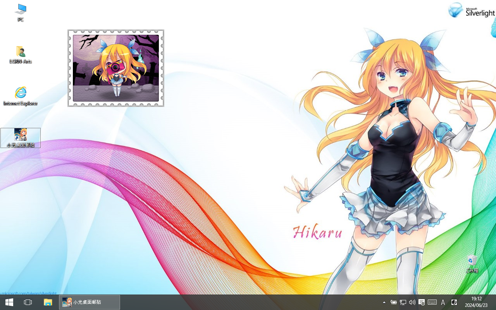

小光桌面郵貼
(Hikaru's Aizawa Desktop Widget)

Welcome to the widget installation guide.
Step 1: Download Microsoft Silverlight:
| Windows x86 | Silverlight_x32.exe | |
| Windows x86_64 | Silverlight_x64.exe | |
| MacOS | Silverlight.dmg |
Step 2: Open this page in a Silverlight-compatible browser (e.g. IE)
Supported Silverlight versions by desktop platform
Step 3: Right click on the object in the frame below and then click on "Install 小光桌面郵貼 on this computer...":
If you see a pic with a sleeping Hikaru, it means something went wrong or Silverlight is not installed.
Screenshot:
